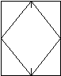
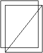

This enumeration defines the basic ways to describe how window panels operate, as shown in Figure 7.1.8.4.A.
The opening direction of the window panels is given by the local placement of the IfcWindow. The positive y-axis determines the direction as shown in Figure 7.1.8.4.A.
Note:
Figures are shown as viewed from the outside (in direction of the positive y-axis).
Figures (symbolic representation) depend on the national building code
These figures/ are only shown as illustrations
Figure 7.1.8.4.A — Window panel directions
7.1.8.4.2 Type values
Type
Description
BOTTOMHUNG
Panel is bottom hung.
Figure 7.1.8.4.B
FIXEDCASEMENT
Panel is fixed.
Figure 7.1.8.4.C
OTHEROPERATION
Other.
PIVOTHORIZONTAL
Panel is swinging horizontally (hinges are in the middle).
Figure 7.1.8.4.D
PIVOTVERTICAL
Panel is swinging vertically (hinges are in the middle).

Figure 7.1.8.4.E
REMOVABLECASEMENT
Panel is removable.

Figure 7.1.8.4.F
SIDEHUNGLEFTHAND
Panel that opens to the left when viewed from the outside.
Figure 7.1.8.4.G
SIDEHUNGRIGHTHAND
Panel that opens to the right when viewed from the outside.